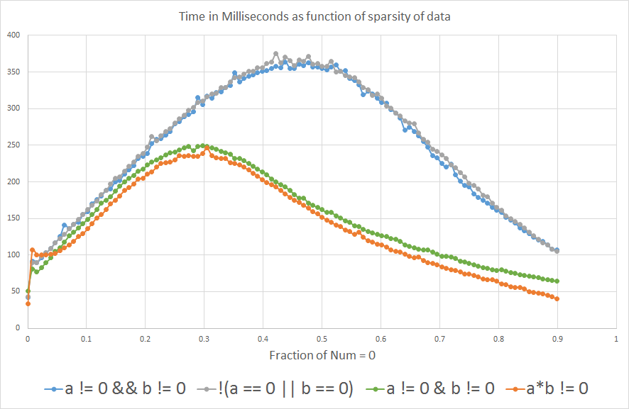
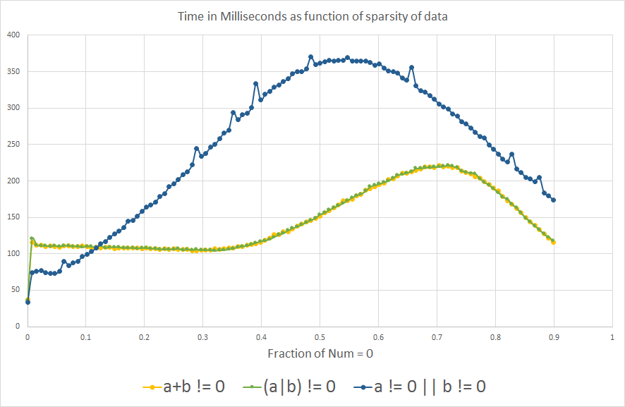

Why is (a*b != 0) faster than (a != 0 && b != 0) in Java?
I'm writing some code in Java where, at some point, the flow of the program is determined by whether two int variables, "a" and "b", are non-zero (note: a and b are never negative, and never within integer overflow range).
I can evaluate it with
if (a != 0 && b != 0) { /* Some code */ }
Or alternatively
if (a*b != 0) { /* Some code */ }
Because I expect that piece of code to run millions of times per run, I was wondering which one would be faster. I did the experiment by comparing them on a huge randomly generated array, and I was also curious to see how the sparsity of the array (fraction of data = 0) would affect the results:
long time; final int len = 50000000; int arbitrary = 0; int[][] nums = new int[2][len]; for (double fraction = 0 ; fraction <= 0.9 ; fraction += 0.0078125) { for(int i = 0 ; i < 2 ; i++) { for(int j = 0 ; j < len ; j++) { double random = Math.random(); if(random < fraction) nums[i][j] = 0; else nums[i][j] = (int) (random*15 + 1); } } time = System.currentTimeMillis(); for(int i = 0 ; i < len ; i++) { if( /*insert nums[0][i]*nums[1][i]!=0 or nums[0][i]!=0 && nums[1][i]!=0*/ ) arbitrary++; } System.out.println(System.currentTimeMillis() - time); }
And the results show that if you expect "a" or "b" to be equal to 0 more than
~3% of the time, a*b != 0 is faster than a!=0 && b!=0:

I'm curious to know why. Could anyone shed some light? Is it the compiler or is it at the hardware level?
Edit: Out of curiosity... now that I learned about branch prediction, I was wondering what the analog comparison would show for a OR b is non- zero:

We do see the same effect of branch prediction as expected, interestingly the graph is somewhat flipped along the X-axis.
Update
1- I added !(a==0 || b==0) to the analysis to see what happens.
2- I also included a != 0 || b != 0, (a+b) != 0 and (a|b) != 0 out of
curiosity, after learning about branch prediction. But they are not logically
equivalent to the other expressions, because only a OR b needs to be non-
zero to return true, so they are not meant to be compared for processing
efficiency.
3- I also added the actual benchmark that I used for the analysis, which is just iterating an arbitrary int variable.
4- Some people were suggesting to include a != 0 & b != 0 as opposed to a
!= 0 && b != 0, with the prediction that it would behave more closely to a*b
!= 0 because we would remove the branch prediction effect. I didn't know that
& could be used with boolean variables, I thought it was only used for
binary operations with integers.
Note: In the context that I was considering all this, int overflow is not an issue, but that's definitely an important consideration in general contexts.
CPU: Intel Core i7-3610QM @ 2.3GHz
Java version: 1.8.0_45
Java(TM) SE Runtime Environment (build 1.8.0_45-b14)
Java HotSpot(TM) 64-Bit Server VM (build 25.45-b02, mixed mode)
Answer
I'm ignoring the issue that your benchmarking might be flawed, and taking the result at face value.
Is it the compiler or is it at the hardware level?
That latter, I think:
if (a != 0 && b != 0)
will compile to 2 memory loads and two conditional branches
if (a * b != 0)
will compile to 2 memory loads, a multiply and one conditional branch.
The multiply is likely to be faster than the second conditional branch if the hardware-level branch prediction is ineffective. As you increase the ratio ... the branch prediction is becoming less effective.
The reason that conditional branches are slower is that they cause the instruction execution pipeline to stall. Branch prediction is about avoiding the stall by predicting which way the branch is going to go and speculatively choosing the next instruction based on that. If the prediction fails, there is a delay while the instruction for the other direction is loaded.
(Note: the above explanation is oversimplified. For a more accurate explanation, you need to look at the literature provided by the CPU manufacturer for assembly language coders and compiler writers. The Wikipedia page on Branch Predictors is good background.)
However, there is one thing that you need to be careful about with this
optimization. Are there any values where a * b != 0 will give the wrong
answer? Consider cases where computing the product results in integer
overflow.
UPDATE
Your graphs tend to confirm what I said.
-
There is also a "branch prediction" effect in the conditional branch
a * b != 0case, and this comes out in the graphs. -
If you project the curves beyond 0.9 on the X-axis, it looks like 1) they will meet at about 1.0 and 2) the meeting point will be at roughly the same Y value as for X = 0.0.
UPDATE 2
I don't understand why the curves are different for the a + b != 0 and the
a | b != 0 cases. There could be something clever in the branch predictors
logic. Or it could indicate something else.
(Note that this kind of thing can be specific to a particular chip model number or even version. The results of your benchmarks could be different on other systems.)
However, they both have the advantage of working for all non-negative values
of a and b.
Suggest
I think your benchmark has some flaws and might not be useful for inferring about real programs. Here are my thoughts:
-
(a|b)!=0and(a+b)!=0test if either value is non-zero, whereasa != 0 && b != 0and(a*b)!=0test if both are non-zero. So you are not comparing the timing of just the arithmetic: if the condition is true more often, it causes more executions of theifbody, which takes more time too. -
(a+b)!=0will do the wrong thing for positive and negative values that sum to zero, so you can't use it in the general case, even if it works here. Also fora=b=0x80000000(MIN_VALUE), the only set bit will overflow out the top. -
Similarly,
(a*b)!=0will do the wrong thing for values that overflow. Random example: 196608 * 327680 is 0 because the true result happens to be divisible by 232, so its low 32 bits are 0, and those bits are all you get if it's anintoperation. -
The VM will optimize the expression during the first few runs of the outer (
fraction) loop, whenfractionis 0, when the branches are almost never taken. The optimizer may do different things if you startfractionat 0.5. -
Unless the VM is able to eliminate some of the array bounds checks here, there are four other branches in the expression just due to the bounds checks, and that's a complicating factor when trying to figure out what's happening at a low level. You might get different results if you split the two-dimensional array into two flat arrays, changing
nums[0][i]andnums[1][i]tonums0[i]andnums1[i]. -
CPU branch predictors detect short patterns in the data, or runs of all branches being taken or not taken. Your randomly generated benchmark data is the worst-case scenario for a branch predictor. If real-world data has a predictable pattern, or it has long runs of all-zero and all-non-zero values, the branches could cost much less.
-
The particular code that is executed after the condition is met can affect the performance of evaluating the condition itself, because it affects things like whether or not the loop can be unrolled, which CPU registers are available, and if any of the fetched
numsvalues need to be reused after evaluating the condition. Merely incrementing a counter in the benchmark is not a perfect placeholder for what real code would do. -
System.currentTimeMillis()is on most systems not more accurate than +/- 10 ms.System.nanoTime()is usually more accurate.
There are lots of uncertainties, and it's always hard to say anything definite with these sorts of micro-optimizations because a trick that is faster on one VM or CPU can be slower on another. If running the 32-bit HotSpot JVM, rather than the 64-bit version, be aware that it comes in two flavors: with the "Client" VM having different (weaker) optimizations compared to the "Server" VM.
If you can disassemble the machine code generated by the VM, do that rather than trying to guess what it does!